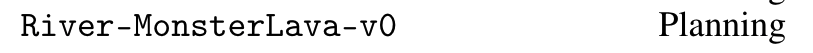
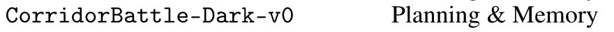
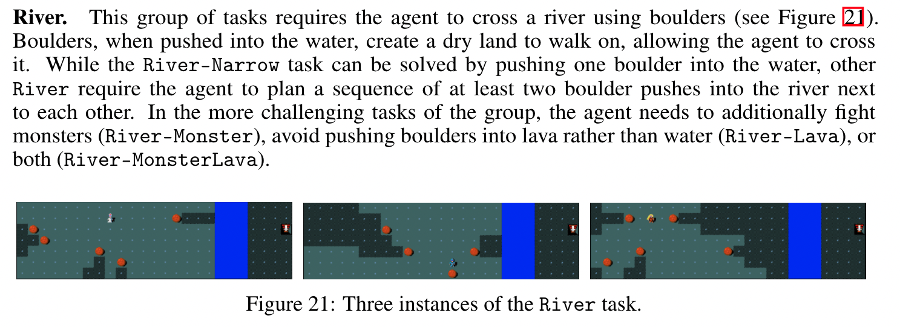
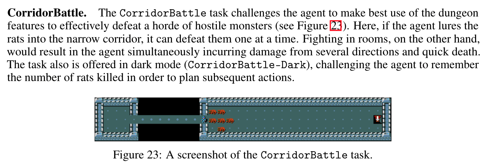
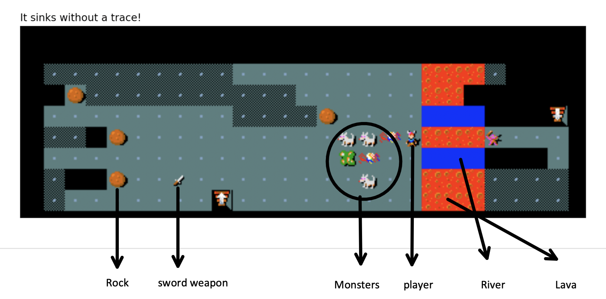
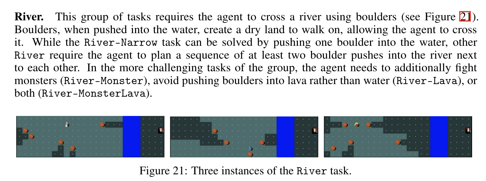
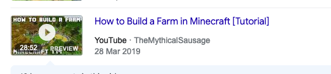

Last Week’s Work Review#
NIL
You need password to access to the content, go to Slack *#phdsukai to find more.
Part of this article is encrypted with password:
[TOC]
TODO List#
- continue to get more information about NetHack, MiniHack
- check this paper about how to deal with non-markovian rewards
- check this paper about how to let humans encode LTL operators
More about NetHack#
Compared to Montezuma’s Revenge, NetHack supports procedural map generation and thus an agent cannot pass the game by simply memorising the demonstrations.
https://minihack.readthedocs.io/en/latest/getting-started/trying_out.html
https://github.com/facebookresearch/minihack/blob/main/docs/tutorials/des_file_tutorial.ipynb
The walkthrough however, is very general compared to other games (e.g., Angry Birds)
Walkthrough info is presented as a Guidebook for NetHack game
Based on the suggestion from MiniHack author, I do think two types of tasks are suitable for our research.
River and CorridorBattle


Both games require planning skills and thus the natural language instructions can be used to guide the agent.


Paper Reading Notes#
-
MiniHack the Planet: A Sandbox for Open-Ended Reinforcement Learning Research
- Author: Mikayel Samvelyan et. al.
- Publish Year: Nov 2021
- Review Date: Mar 2022
-
Foundations for Restraining Bolts: Reinforcement Learning with LTLf/LDLf Restraining Specification
- Author: Giuseppe De Giacomo et. al.
- Publish Year: 2019
- Review Date: Mar 2022
-
Collaborative Planning with Encoding of Users’ High-level Strategies
- Author: Joseph Kim et. al.
- Publish Year: 2017
- Review Date: Mar 2022
How to let people do the annotation work#
based on Collaborative Planning with Encoding of Users’ High-level Strategies and Guided K-best Selection for Semantic Parsing Annotation, we should let people express in natural language.
there are two options that convert low level instructions into logical forms
- ask several domain experts to translate these natural language instructions into LTL formulas (paper 1)
- build a annotation program that restricts the vocabulary that people can use, and suggests keywords such as “at most once”, “eventually” etc. In the end we will obtain canonical utterances that can be automatically translated into LTL based on some kinds of synchronous context free grammar (SCFG). (paper 2)
I think we can combine the both, we manually label the instructions into LTL and meanwhile restrict the vocabulary and also provide keyword suggestions.
Annotation example#
|
|

MiniHack River task:

Bottom-up way#
We tell the volunteers the general information of the task (e.g., the information above) and then let them play. We then record gameplay (below)

Then, in order to collect low level natural language annotations (level 2), we ask another group of people to describe the event by identifying the exact objects and movement of the agent.
Level 2 annotation example:
- “Push the boulder at position (0,3) into the water block at (6, 3). Meanwhile, fight the incoming moving fox and two zombies. After pushing the first boulder, push the second boulder at position (-2, 4) into water block at (7, 3). Then, push the third boulder at position at (-4, 2) into water block at (8, 4). After crossing the river, fight the zombie at the other side so as to reach the staircase”
For level 3 annotations, we ask another group of people to look at both the level 1 gameplay records and the level 2 event descriptions so as to summarise the intent of the player. In order to do this, the annotator should find the common points among the events and the objects that the agent interacted with.
Level 3 annotation example:
- “Identify the river you want to cross and then move boulders into that river; reach the nearest boulders so as to avoid being surrounded by monsters; Meanwhile attack monsters that are isolated to also avoid being surrounded by them. After crossing the river, find the staircase and reach there as quick as possible.”
We do not need annotators to annotate level 4 instructions. It is because
- Level 4 require expert knowledge
- We have already had guidebook and general walkthrough guides for NetHack online and we can directly extract strategies that is relevant to the task from there.
Level 4 are the general strategies that can be shared across different tasks. Level 4 strategies are also those rules that should always be obeyed throughout the whole game.
Level 4 strategies can be found in NetHack guide books such as
- “avoid going into lava” “fight isolated foxes because foxes are weak”. “avoid fight goblin if you do not have a weapon”, “Boulders are especially useful for crossing water; push them into water and they will create new dry land for you to walk (9/10 chance)” etc.
Notice that such an “avoidance of something” strategy is hard to be revealed in good demonstrations. There are also strategies that tell players how to fight certain monsters.
Level 5 task goal
- “go to the staircase on the other side”
Top-down way#
Given Level 5 goal and Level 4 general strategies, we ask experts to separate the task into subgoals. and these subgoals are the level 3 information
- I realise that this NetHack River task is not so good because it is quite hard to break this task into concrete and separate subgoals. In contrast, Angry Birds and Minecraft however, can separate one task into subgoals such as
- “destroying the front pigs; collapse the second building, finally destroying the hidden pigs” etc. For Angry Birds
- “get food”, “build a house”, “build a bed” “get weapons”, “build a farm” for MineRL survival task

Based on level 3 subgoals, we ask a group of people to write down detailed corresponding action sequences that they think robot could understand as level 2 annotations.
Finally for level 1 data, we ask another group of people to play the game by following the action sequences